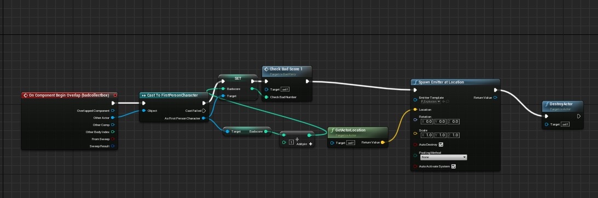
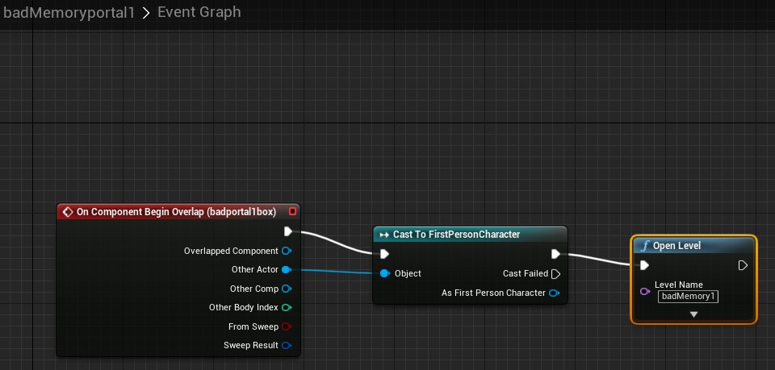
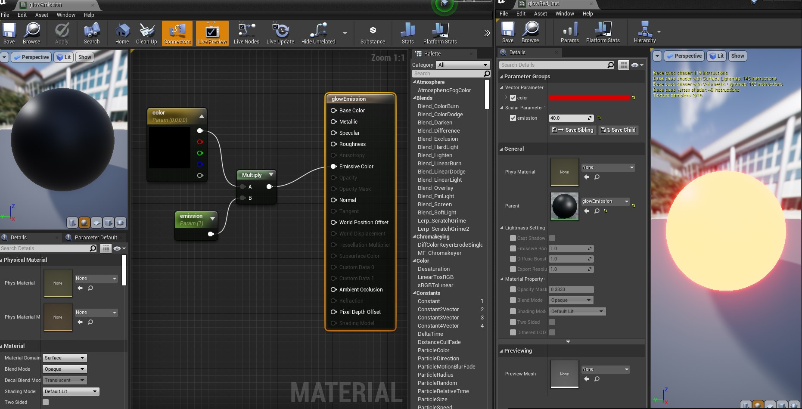
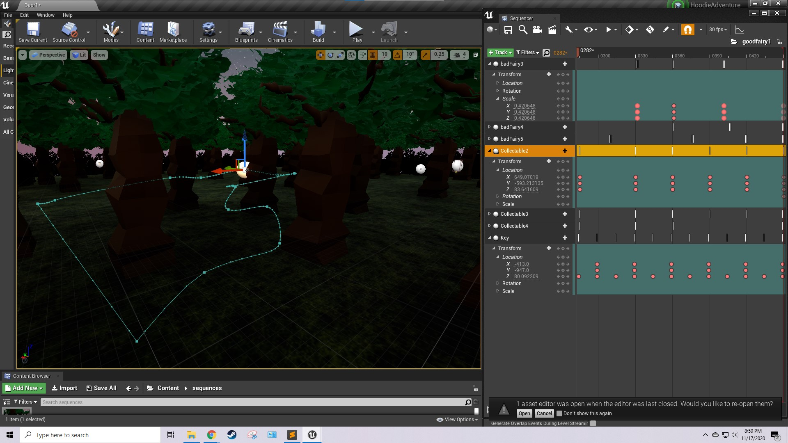

First Post: 11/17
-What might your game be about?-What have you done so far?-What are some inspirations?-What will a quest in the game be? How is creating that quest going? What have you done so far?
My game will be about a collection of memories from the developers. So far I have been focused on level 1 getting fairy collectables. It's based on my memory and I always find forests magical whether it is night or day.This quest is an experience to relive our memories. However collecting bad memories are meant to be forbidden so I've made the dark fairies very difficult to track and perhaps aiming to make it move around a lot like the good memory fairies. So far I was able to create a sequencer to the good fairies while the bad fairies are sizes changes making it difficult to find, also managed to change the color of the sky. Lighting is still playing around with it, managed to learn how to use emission materials.
-Post some of the code you have done as well.
   